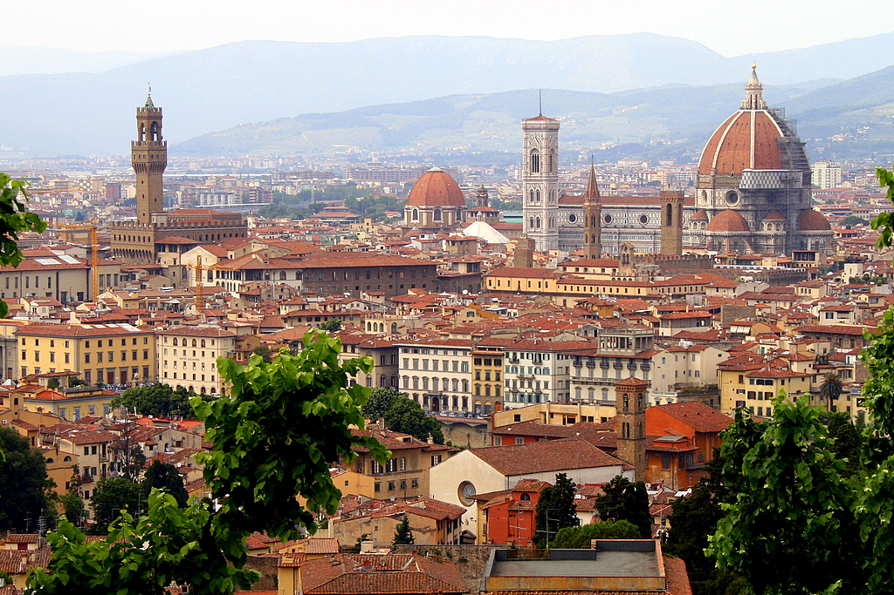
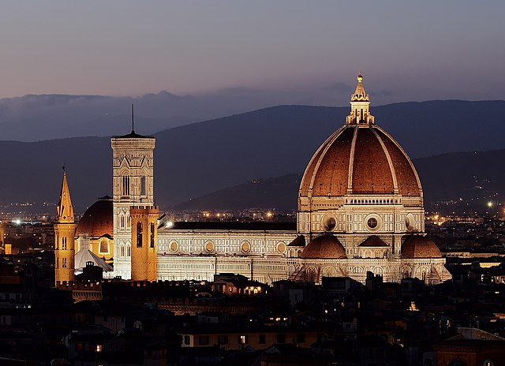
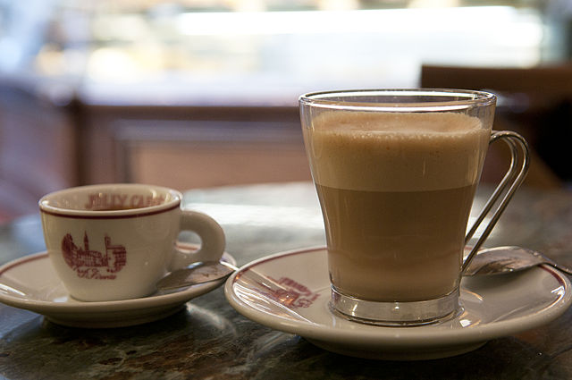

Travel Guide
Everything you need to plan a Florence trip as a young traveler—top attractions, budget tips, and smart packing advice.

Must-See Attractions
Top Picks
- Duomo & Cathedral Square
- Ponte Vecchio
- Uffizi Gallery
- Piazzale Michelangelo
Florence is walkable and packed with landmarks. Start your day early, plan museum visits ahead, and leave time to explore neighborhoods on foot. Some of the best moments happen in small piazzas, cafés, and side streets.
A simple route: Duomo area → Ponte Vecchio → lunch near the river → sunset at Piazzale Michelangelo.

Budget Tips

- Mix sit-down meals with quick panini or market stops.
- Use public buses when needed—most spots are still walkable.
- Book popular museum tickets early to avoid last-minute stress.
- Choose free viewpoints and markets for the best atmosphere.
Packing Advice
- Comfortable walking shoes (cobblestones are tough).
- Light layers for changing temperatures.
- Portable charger and reusable water bottle.
- Small day bag with a zipper.
Keep it simple and pack for walking. In warmer months, plan midday museum breaks and carry water. In spring or fall, layers make sightseeing more comfortable.
Pro Tip
Bring a lightweight scarf—it’s useful for cooler evenings and for visiting churches respectfully.